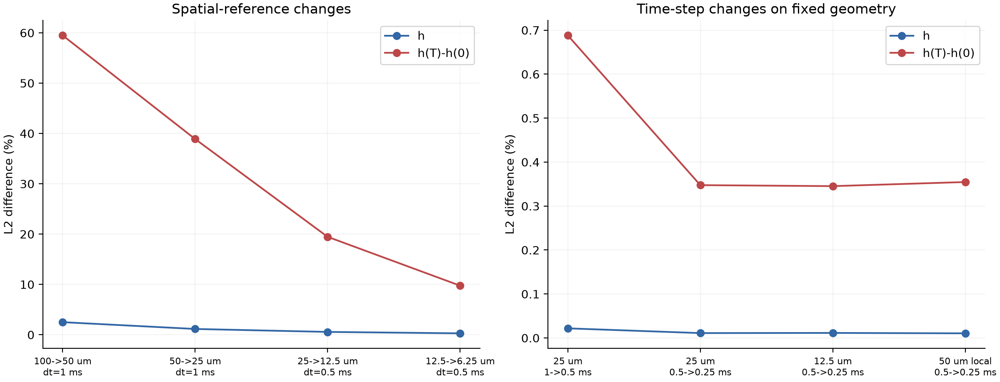
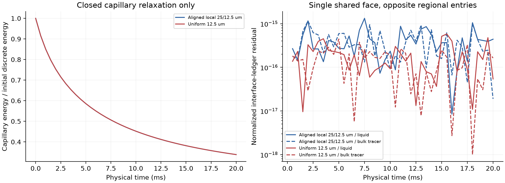
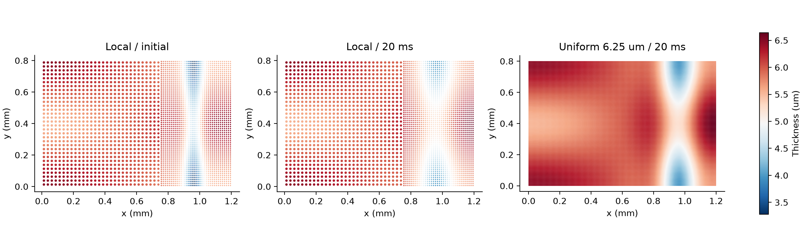
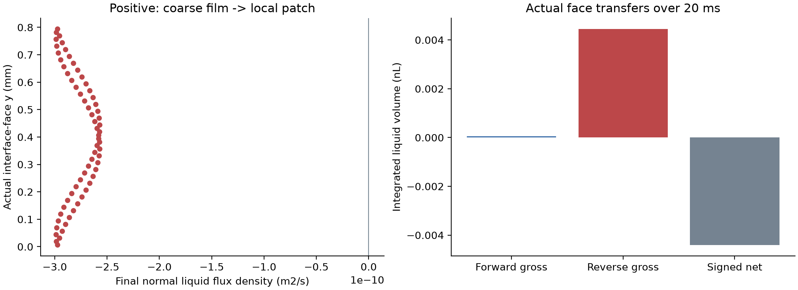

C1 EXPLORATION / NOV 11–12, 2026 / FIXED-SUPPORT DRAINAGE
从几何传递，推进到
真正计算的共享面排液。
粗膜与细局部区域使用同一套几何、能量与通量；分别检查守恒、时间误差和空间精度。失败布局与修复控制全部保留。
当前结果只覆盖封闭、固定支撑的毛细排液及被动体相示踪。水平1.2×0.8 mm膜，基准厚度6 μm，20 ms物理时间。表面不动、表面量固定；没有弯月面动力学、Marangoni反馈、吸附/再分配、重力、DLVO或机械运动。能量证据仅指毛细排液，不是完整可溶膜的热力学耗散。SDS参数沿用现有SI材料，体相浓度只作被动示踪。
本轮结论和仍未通过的关口
代表布局为25/12.5 μm、450 μm局部域；相对6.25 μm参照，厚度误差0.320%、变化场误差9.801%、同区域净交换差0.932%。冻结的2% / 10% / 10%关口通过（仅限此固定表面数值工况）。变化场误差接近10%上限，尚不能称为网格无关或完整C1验证。
原240 μm局部区域在必要守恒检查通过后，变化场误差仍约41%（50/25 μm）或20%（25/12.5 μm），超出冻结10%标准。分解显示大部分来自分区错位及分片常数表示；投影后的均值更接近，也不替代完整场门槛。因此补做对齐格点和300/450/600 μm宽度挑战，保留原失败结果。

时间收敛不能替代空间收敛
本批时间步减半的变化场差异最大0.688%。比较分别固定空间或时间步，6.25 μm挑战独立检查原12.5 μm参照。所有“参考”均来自同一方程的数值解，不是实验真值。

每份液量和体相示踪量，都能追溯到同一张面
全批液量/体相示踪归一化残差最大2.09e-14 / 1.71e-14，界面液量残差≤1.71e-15，没有正的毛细最小移动能量不等式超额。界面两侧使用相同共享面、相反符号，体相输运使用最终隐式供体浓度；正反向公式有独立解析检查。封闭外边界无液量输出，不将内部重分布称为实验排液速度。

真实保存状态与接口通量


几何修复与计算规模
原五组局部布局因机器精度重复顶点被凸性检查拒绝，未进入PDE；独立凸包面积诊断保留。修复只合并相邻机器精度重复点，禁止用凸包改变真实凹角，每格相对面积变化限制1e−12。两组均匀解控制最大相对差5.69e-15，原源提交、失败日志与暂停中断目录都保留。
代表布局3264个单元，对同最细间距均匀12.5 μm的6144个减少46.88%。这里的工作站耗时包含几何构造与导出，仅是本批描述性数据；尚未完成同精度生产成本或完整运动耦合的性能比较。
展开有效工况及守恒指标
| Case | N | dt/ms | Newton失败 | E/E0 | 液量残差 | 界面液量残差 |
|---|---|---|---|---|---|---|
| guard | 96 | 0.5 | 0 | 0.9809 | 3.34e-16 | 3.71e-17 |
| u100_t1 | 96 | 1 | 0 | 0.7155 | 6.67e-16 | 5.15e-17 |
| u50_t1 | 384 | 1 | 0 | 0.4384 | 1.50e-15 | 1.21e-16 |
| u25_t1 | 1536 | 1 | 0 | 0.3584 | 2.50e-15 | 1.64e-16 |
| u25_t0p5 | 1536 | 0.5 | 0 | 0.3573 | 2.67e-15 | 2.89e-16 |
| u25_t0p25 | 1536 | 0.25 | 0 | 0.3567 | 3.67e-15 | 2.50e-16 |
| u12p5_t0p5 | 6144 | 0.5 | 0 | 0.3383 | 5.67e-15 | 5.83e-16 |
| u12p5_t0p25 | 6144 | 0.25 | 0 | 0.3378 | 5.84e-15 | 5.75e-16 |
| l100_50_w240 | 160 | 0.5 | 0 | 0.4605 | 1.67e-15 | 1.25e-16 |
| l50_25_w240 | 624 | 0.5 | 0 | 0.3875 | 2.00e-15 | 2.96e-16 |
| l50_25_w240_t0p25 | 624 | 0.25 | 0 | 0.3869 | 2.17e-15 | 2.31e-16 |
| l50_25_w360 | 720 | 0.5 | 0 | 0.3579 | 2.00e-15 | 7.54e-16 |
| l25_12p5_w240 | 2432 | 0.5 | 0 | 0.3486 | 5.51e-15 | 3.92e-16 |
| aligned_l50_25_w300 | 672 | 0.5 | 0 | 0.3419 | 2.50e-15 | 4.78e-16 |
| aligned_l50_25_w450 | 816 | 0.5 | 0 | 0.3571 | 3.34e-15 | 4.76e-16 |
| aligned_l50_25_w600 | 960 | 0.5 | 0 | 0.3570 | 2.34e-15 | 8.96e-16 |
| aligned_l25_12p5_w450 | 3264 | 0.5 | 0 | 0.3383 | 7.51e-15 | 1.33e-15 |
| u6p25_t0p5 | 24576 | 0.5 | 0 | 0.3337 | 2.09e-14 | 1.71e-15 |
展开全部精度比较（失败标准保持不变）
| Candidate | Reference | h L2 | Δh L2 | 同区域净交换差 | 三门槛 |
|---|---|---|---|---|---|
| u100_t1 | u12p5_t0p25 | 2.952% | 71.752% | 59.469% | FAIL |
| u50_t1 | u12p5_t0p25 | 1.293% | 43.238% | 11.152% | FAIL |
| u25_t1 | u12p5_t0p25 | 0.567% | 19.574% | 1.961% | FAIL |
| u25_t0p5 | u12p5_t0p25 | 0.563% | 19.484% | 1.546% | FAIL |
| u25_t0p25 | u12p5_t0p25 | 0.562% | 19.447% | 1.339% | FAIL |
| u12p5_t0p5 | u12p5_t0p25 | 0.011% | 0.345% | 0.256% | PASS |
| l100_50_w240 | u12p5_t0p25 | 1.907% | 62.449% | 11.149% | FAIL |
| l50_25_w240 | u12p5_t0p25 | 1.110% | 34.546% | 5.679% | FAIL |
| l50_25_w240_t0p25 | u12p5_t0p25 | 1.108% | 34.499% | 5.558% | FAIL |
| l50_25_w360 | u12p5_t0p25 | 0.866% | 28.123% | 5.792% | FAIL |
| l25_12p5_w240 | u12p5_t0p25 | 0.577% | 20.281% | 4.535% | FAIL |
| aligned_l50_25_w300 | u12p5_t0p25 | 0.897% | 25.112% | 0.099% | FAIL |
| aligned_l50_25_w450 | u12p5_t0p25 | 0.642% | 19.572% | 3.478% | FAIL |
| aligned_l50_25_w600 | u12p5_t0p25 | 0.635% | 19.488% | 10.027% | FAIL |
| aligned_l25_12p5_w450 | u12p5_t0p25 | 0.155% | 1.042% | 0.397% | PASS |
| u6p25_t0p5 | u12p5_t0p25 | 0.279% | 9.803% | 0.464% | PASS |
| u100_t1 | u50_t1 | 2.499% | 59.486% | 55.104% | FAIL |
| u50_t1 | u25_t1 | 1.149% | 38.892% | 9.375% | FAIL |
| u25_t0p5 | u12p5_t0p5 | 0.562% | 19.457% | 1.359% | FAIL |
| u25_t1 | u25_t0p5 | 0.022% | 0.688% | 0.422% | PASS |
| u25_t0p5 | u25_t0p25 | 0.011% | 0.348% | 0.209% | PASS |
| u12p5_t0p5 | u12p5_t0p25 | 0.011% | 0.345% | 0.256% | PASS |
| l50_25_w240 | l50_25_w240_t0p25 | 0.010% | 0.355% | 0.128% | PASS |
| l50_25_w240 | u25_t0p5 | 1.245% | 40.951% | 3.751% | FAIL |
| l50_25_w240_t0p25 | u25_t0p25 | 1.244% | 40.934% | 3.828% | FAIL |
| l25_12p5_w240 | u12p5_t0p5 | 0.577% | 20.287% | 4.373% | FAIL |
| l50_25_w360 | u25_t0p5 | 0.983% | 34.317% | 5.852% | FAIL |
| aligned_l50_25_w300 | u25_t0p5 | 0.792% | 18.185% | 4.302% | FAIL |
| aligned_l50_25_w450 | u25_t0p5 | 0.309% | 2.047% | 1.417% | PASS |
| aligned_l50_25_w600 | u25_t0p5 | 0.295% | 0.474% | 2.288% | PASS |
| aligned_l25_12p5_w450 | u12p5_t0p5 | 0.155% | 0.998% | 0.231% | PASS |
| aligned_l50_25_w450 | aligned_l50_25_w600 | 0.107% | 2.076% | 1.440% | PASS |
| u12p5_t0p5 | u6p25_t0p5 | 0.280% | 9.753% | 0.439% | PASS |
| aligned_l25_12p5_w450 | u6p25_t0p5 | 0.320% | 9.801% | 0.932% | PASS |
| l25_12p5_w240 | u6p25_t0p5 | 0.552% | 19.002% | 6.404% | FAIL |
下一步仍是运动膜与真实边缘耦合
- 若独立细参照仍显示精度不足，继续修正空间离散或局部域选择，不以守恒或背景厚度误差代替动态场门槛。
- 在同一几何上接入有几何来源的弯月面条件和边界功，再加入材料运动及表面/体相响应；分别核对材料跨界、相对排液与重映射。
- 用独立几何、时长和材料条件检验预测；最后才对照实验条纹与交换量。完整C1及投稿创新性仍未完成验收。